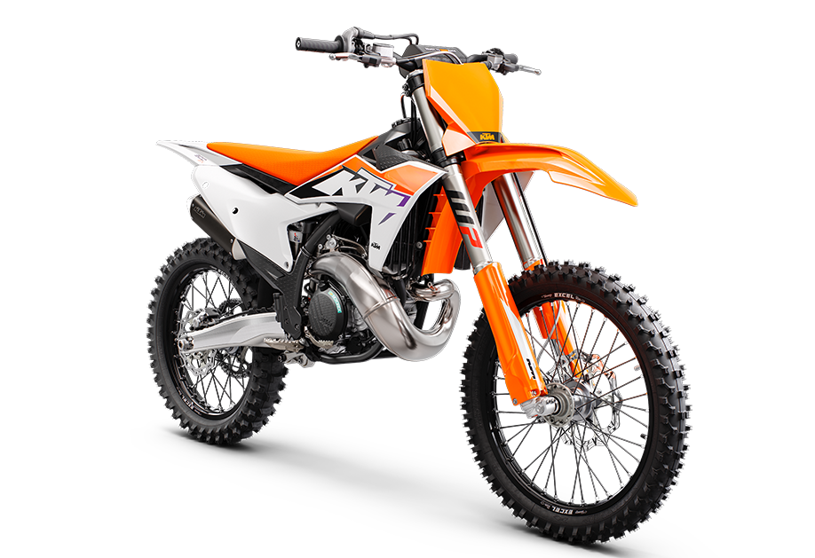

Maximum power at the least possible weight, amplified by low maintenance costs and smooth, linear power delivery - the KTM 300 SX is set to take the MX Open category back to school. Churning out more than 57 HP from an engine weighing only 23,9 kg, the KTM 300 SX sets the benchmark when it comes to power to weight ratios. Could the KTM 300 SX be the new Open Class president?
